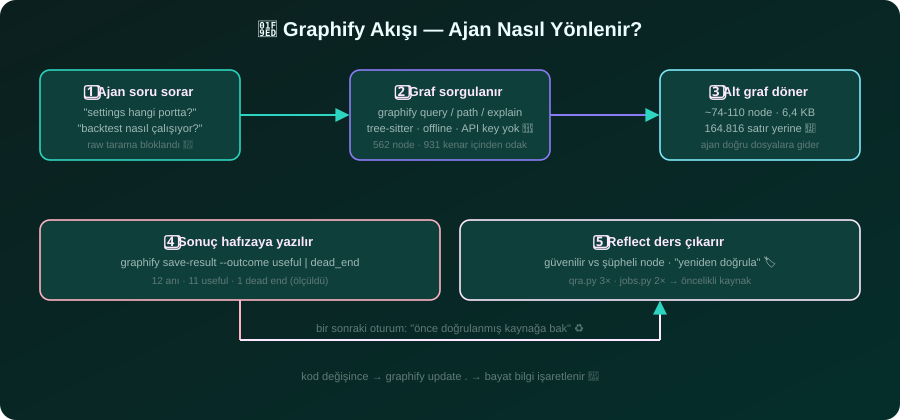

7.580 satır kod — sorgu başına 1.694 token ile yönetildi 🌱
🔒 Tamamen offline🌳 Tree-sitter, LLM yok🧪 Gerçek rakamlar📐 Ölçüm: 2026-08-16
📏 Kod tabanı
7.580 satır
67 dosya · 71.802 token (Python + TypeScript)
🗺️ Kod grafi
562 node
931 kenar · 44 topluluk · 599 KB
🎯 Sorgu başına
1.694 token
kodun %2,4'ü — %97,6 azalma
🧠 Hafıza
12 anı
11 işe yaradı · 1 çıkmaz öğrenildi
💾 Tüm bilgi vs tek sorgu
71.802 token — tüm kod
1.694 token — tek sorgu (kodun %2,4'ü) 🎯
🔬 Ekstraksiyon kalitesi
%100 extracted
✓ 4/931 kenar çıkarımsal (%0.4) · güven 0.8
✓ 0 API çağrısı, 0 token maliyeti
🏆 God node'lar (çekirdek)
📍 predict() — 24 kenar
📍 get_conn() — 21 kenar
📍 _post() — 19 kenar
📍 build_critic_state() — 13 kenar
🧭 Ajan nasıl yönleniyor?

1️⃣
Kurulum:graphify install --project --strict — strict mod, ajanın ham kaynak taramasını bloklayıp doğrudan grafa yönlendirir, sonra tekrar yönlendirmeye döner (takılmaz).
2️⃣
Çıkmaz öğrenildi: "settings sayfası" sorgusu → graf bu sayfayı bizim projede bulamadı → dead end işaretlendi → bir daha aynı yola girilmiyor. Gerçek cevap tek sorguda: 8080 = eski proje, bizim UI 8081.
3️⃣
Hata ayıklama hızı: backfill kuyruğu takılması (6 katmanlı hata), QRA köşe çözümü, SOL/GLD'nin 31 saniyelik veri çekişi — hepsinde query/path ile doğru dosyaya tek adımda ulaşıldı.
4️⃣
Ders çıkarma:save-result + reflect → qra.py 3× · jobs.py 2× "güvenilir kaynak" listesinde; sonraki oturumlar önce oraya bakıyor.
5️⃣
Bayat bilgi koruması: kod değişince ilgili derse "yeniden doğrula" bayrağı basılıyor — eski bilgiyle yanlış yönlendirme olmuyor.
⚖️ Kısa karşılaştırma (detay: docs/03-karsilastirma.md)
grep / ripgrep✅ her yerde var, anlık❌ ilişki yok, ajan için bağlam yok
IDE + LSP✅ insan için harika gezinme❌ ajan için programatik bağlam yok
Sourcegraph✅ kurumsal, dev repo❌ ağır sunucu, offline değil
CodeQL/Semgrep✅ gerçek güvenlik analizi❌ kural yazımı şart, gezinme değil
Graphify✅ offline AST graf + bellek + ajan-first❌ AST sınırı, doküman için API key, gitignore disiplini şart
⚠️ Dürüstlük notu: Tüm rakamlar bu projede ölçüldü (graphify 0.9.43, 2026-08-16). "Token tasarrufu" yüzdeleri okunacak metin boyutunun sorgu çıktısına oranıdır (satır başı ~50 bayt varsayımı) — gerçek tasarruf ajanın okuma davranışına göre değişir. Kesin ölçümler: satır/node/kenar sayıları, dosya boyutları, sorgu çıktısı boyutu.